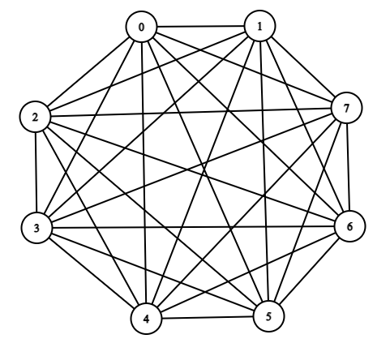
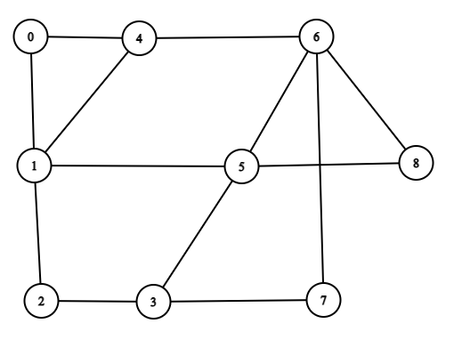
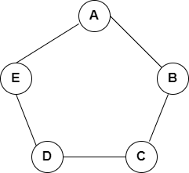
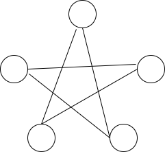
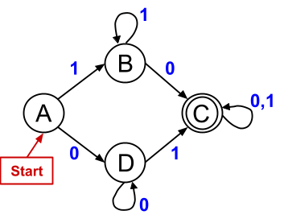
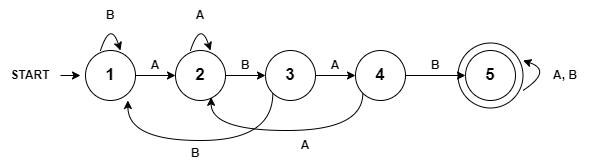
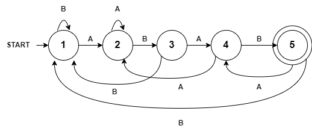

(c) BYU-Idaho
Consider the
Find the following:

Answer:
What is the relationship between the number of edges and the total degree?
Answer: Total Degree =
Does the graph above have an Euler circuit? How do you know?
Answer: No. It has odd degrees.
The following graph does not have an Euler circuit. How can you add 1 new edge to ensure there is a Euler circuit?

Answer: Draw an edge connecting nodes 3 and 4.
Consider the following two graphs. If these graphs are isomorphic, then fill in the missing letters A through E.
| Graph 1 | Graph 2 |
|---|---|
|  |  |
Answer: There are multiple ways to show the mapping. If you start with A on the top, the follow one of the lines to put B, C, D, and E. Going around the star, one order would be A, D, B, E, C and another order would be A, C, E, B, D.
Consider the Finite State Machine (FSM) below.

Part 1
Answer:
Part 2
What type of input stream does the FSM look for?
A string that has at least one 1 and one 0.
Part 1
Draw an FSM to determine if a string of only A's and B's has the substring "ABAB" within it. Test the FSM with:
Answer:

Part 2
Draw an FSM to determine how many times the substring "ABAB" exists within the string. Recall that you do this by counting how many times you arrive at the acceptance state. Test the FSM with:
Answer:
